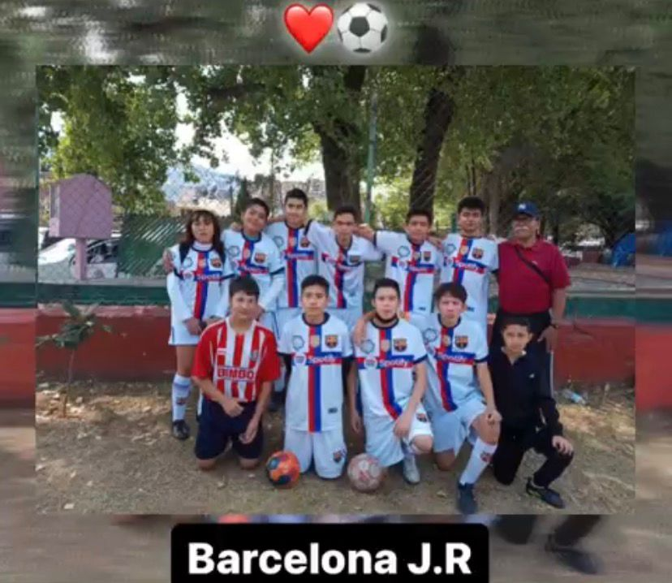

Mis pasatiempos

Uno de mis principales pasatiempos es jugar y practicar fútbol, ya que es una actividad que me ayuda a mantenerme activo, mejorar mi condición física y desarrollar disciplina personal.
Otro de mis pasatiempos durante mucho tiempo fue jugar Free Fire. Llegué a ser muy constante en este juego y le dedicaba gran parte de mi tiempo libre, ya que me gustaba competir y mejorar mis habilidades.
Además, uno de mis pasatiempos también fue trabajar en la Central de Abastos, donde aprendí el valor del esfuerzo, la responsabilidad y el trabajo duro, experiencias que han contribuido a mi crecimiento personal.